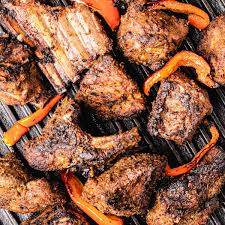

Home
Nyama Choma

Description
Nyama Choma is an East African delicacy that is gaining popularity worldwide. It is a staple meal and national dish in Kenya and Tanzania. Nyama Choma is a Swahili term that means grilled meat.
The goat meat is marinated in spices, perfectly grilled, and served alongside a salad. It’s a tasty, hearty dish that will serve a crowd, so it is usually served on special occasions.
Ingredients
- Goat meat
- Onions
- Garlic
- Cooking oil
- Smoked paprika
- Salt
- Cumin
- Black pepper
Steps
- Wash and drain the meat followed by cutting into smaller bite sizes.
- Pour your oil and spices into a mixing bowl and mix them.
- Blend the onions and garlic coarsely in a food processor, or finely chop them if you prefer.
- Put the chunks of meat into the mixing bowl, add the spices, the blended garlic, and onion, and properly mix everything.
- Marinate it in the fridge for 2 hours or longer.Bring it out of the refrigerator and let it come to room temperature.
- Turn the grill to medium-low heat and arrange the meat on the grill.
- Add 2 tablespoon of salt to 2 cups of water. Grill the meat for 50 minutes, turning every 10 minutes and basting with the salt water.
- Serve with salad and Ugali.